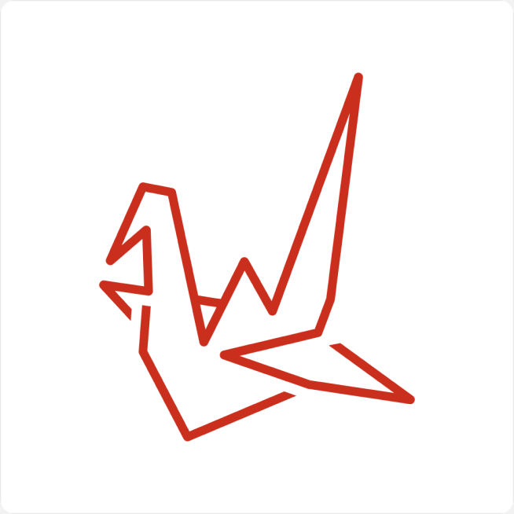
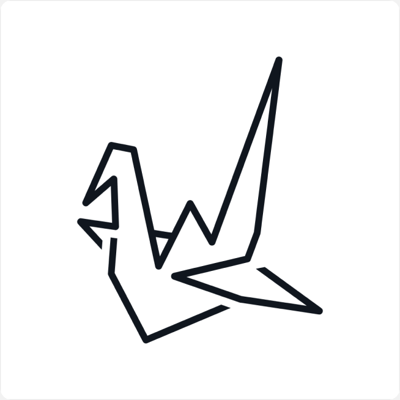
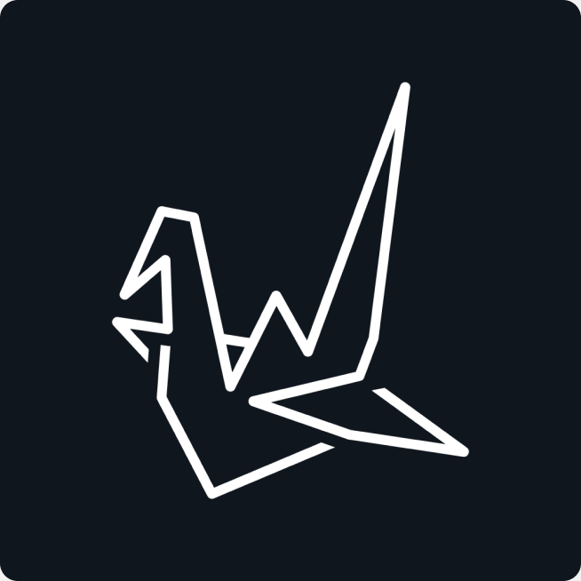
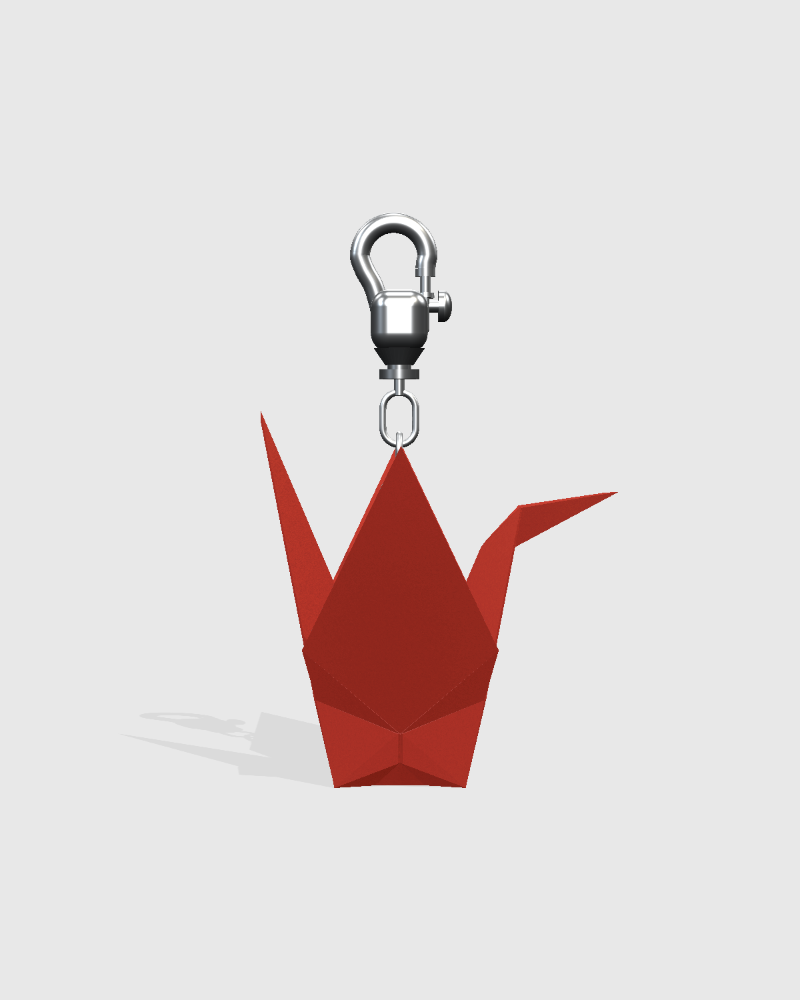
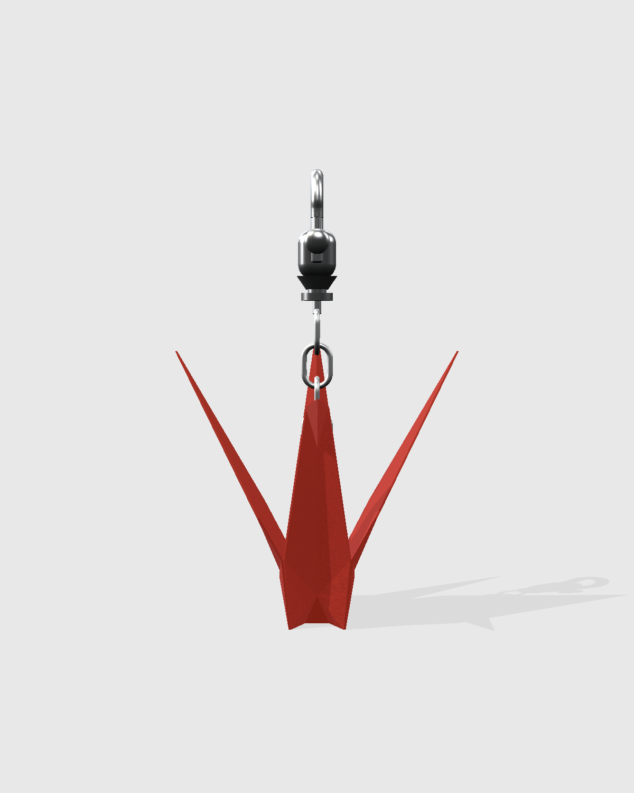
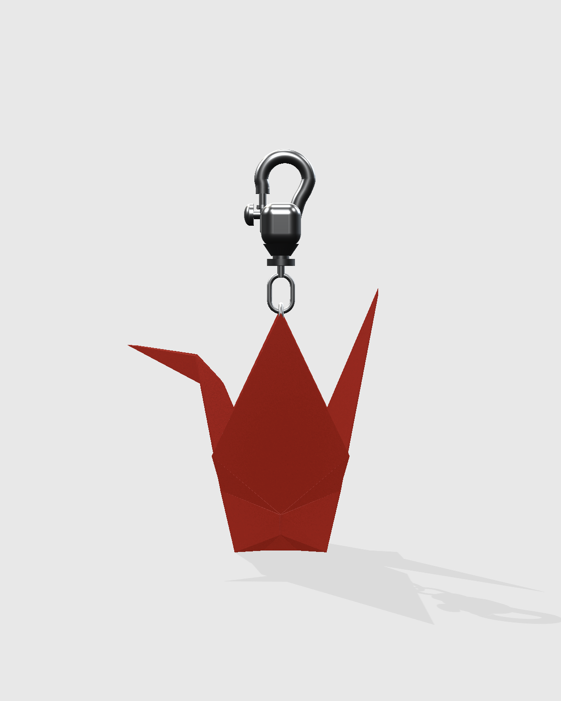
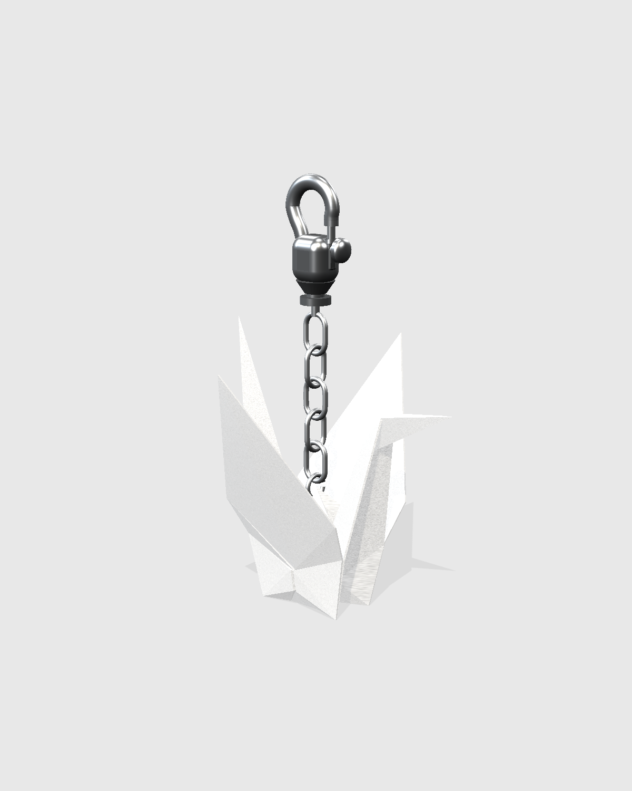

Orizuru is the Japanese name for the origami paper crane: ori, folded, and zuru, crane. I kept the brand to the crane’s own materials: white paper, a grey fold, ink, and the red crown of the red-crowned crane, a bird that pairs for life.
That one idea runs through everything below, so the app, the pattern and the charm all feel folded by the same hand.


One line, folded.
The crane is drawn with one even line, sharp folds, and open gaps where paper folds behind paper. In the lockup, the crane’s red crown becomes the dot on the i.



Lockup scale test, 140 to 18 px. Size = lockup height.
Four colours, from one crane.
White paper, a grey fold, the red crown, and ink. The widths below are how much of a layout each colour takes.
Because red is the brand, it can’t also mean “error.” Errors use a darker red, with an icon and words.
Serif speaks. Grotesk works. Mono counts.
Three typefaces, each with one job. Instrument Serif carries the wordmark and titles at 28 px and up. Space Grotesk is everything you read and tap. DM Mono is only for numbers.
Speaks: the wordmark, display and titles.
Works: everything you read and tap.
Counts: numbers only.
A flock of folded cranes.
Built from the exact logo crane, upright and rotated 180°, with enough white between birds that each crane still reads as a crane.
Every button is a piece of folded paper.
Origami starts from a square with sharp corners, so nothing in the interface is rounded like a generic app. Every button, pill and the nav is a sheet of paper with its corners cut at 45° and folded under.
The active tab gets a beam of red light, like a lamp over the page, instead of a filled icon. Try it: click a tab.
One fold, same everywhere
The cut is always a quarter of the height at 45°, on all four corners, so a small date pill and the full nav bar come from the same rule. Highlight and shade only sit on the corner folds. That’s enough to read as paper without looking like a skeuomorphic texture.
The crane you carry.
The app’s paper crane, made physical as a keychain charm in brand red and white. It’s 48 × 50 × 48 mm in matte, soft, 45% translucent rubber, with crisp folds kept intact, and the keychain threads through the hole already in the crane’s back.
When your partner folds a crane, the charm lights up in its own colour for two seconds. It’s the only signal Orizuru sends during the day.




You fold a crane. You never post.
The words are part of the paper too. The app uses plain, calm language, says your partner’s name instead of “user,” and never pushes you to open it.